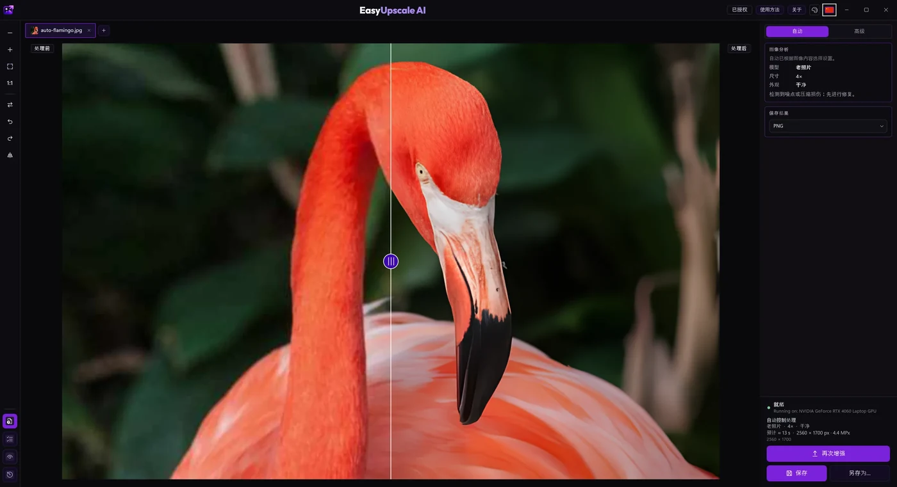
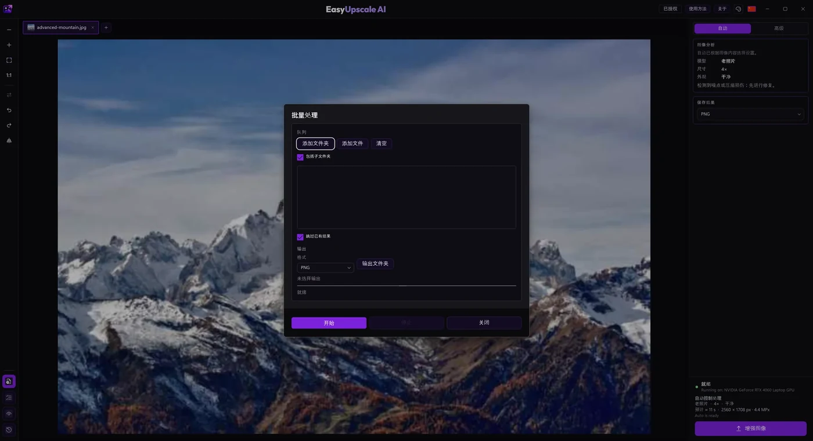
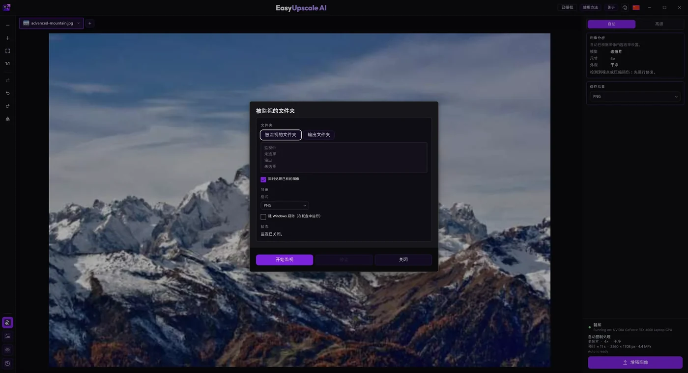

本网页演示
在浏览器中快速试用
免费
试试放大放大倍数2 倍
水印较小，位于一角（无水印结果 €1.49，或使用许可证）
模型3 个模型
自动模式无
高级模式无
批量处理（整个文件夹）无
监视文件夹无
保存格式PNG
速度取决于浏览器和显卡
大图大图可能触及浏览器的内存上限
离线处理否，模型需从服务器下载
Windows 应用 · Microsoft Store · 一次性授权
在自己的电脑上将照片放大至 4 倍：更清晰、无需上传、无需订阅。自动模式免费；一次性授权可解锁高级模式、4 倍、批量处理和监视文件夹。
使用相同模型的免费演示，仅限 2 倍并带有小水印。Windows 应用更快，且没有水印。
来自 Windows 应用的真实结果。拖动分隔线，对比普通放大与 EasyUpscale AI。
我们自己的文字模型：专为文字、标签和文档从零训练，只使用可商用的数据。标签、招牌和印刷页面都保持清晰。在 Windows 应用中，Auto 模式会把它用于照片中的文字，高级模式下也可以手动选择。


小尺寸原图是较大图片的缩小副本；文字页面先按原尺寸生成，再缩小。
Windows 完整版应用
EasyUpscale AI 免费且无水印（自动模式，2 倍放大）。一次性购买 €14.99 的许可证，即可解锁高级模式、4 倍、批量处理、监视文件夹和更多格式。



网页用于快速试用。应用免费且无水印，许可证可解锁其余功能。
在浏览器中快速试用
Windows 应用，无许可证
带许可证的 Windows 应用
这是我们在一台配备 RTX 4060 Laptop 的电脑上的测量，越短越好。在其他电脑上数值会有所不同。
不会。计算在您的浏览器中、使用您的显卡完成，只会从服务器下载模型。
是的，2 倍放大免费，结果一角带有小水印。无水印结果每张图片 €1.49，使用许可证密钥可永久去除。Windows 应用在 2 倍下免费且无水印，许可证可解锁 4 倍放大。
支持 WebGPU 的最新版 Chrome 或 Edge。没有 WebGPU 时，计算在处理器上进行，速度会明显变慢。
应用直接使用显卡，不受浏览器限制。在我们用 RTX 4060 的测量中，它大约快 2–3 倍；结果因电脑而异。
应用可处理最大 120 Mpx 的结果。在浏览器中，大图可能触及内存上限，所以较大的图片更适合用应用处理。
网页演示可以，在任何支持足够完善的浏览器中都能用。完整版应用仅支持 Windows。
您有 14 天时间申请退款。
放大处理可离线运行。许可证密钥需在线激活，应用启动时会进行校验。没有网络时许可证可维持 7 天，之后需要联网。
Windows 10（1903 或更高版本）或 Windows 11，64 位，支持 DirectX 12 的显卡，约 1 GB 磁盘空间，建议 8 GB 内存。